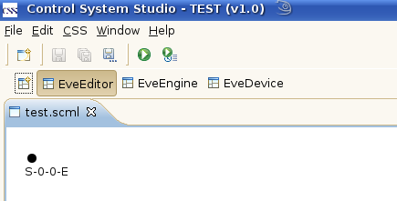

Create a Scan Description
If you are not familiar with the concept of a scan description consider reading this topic first.
To create a new scan description follow these steps:
- On the open Editor Perspective click File -> New -> Scan Description

- In the appearing dialog either use the „Search...” button or enter a file name manually. Please keep in mind that the file extension must be „.scml”.
- After clicking the „Finish” button you see a new tab in the editor with an empty scan description (only the start event S-0 is present).

Now you are able to Add a scan module to your scan description.